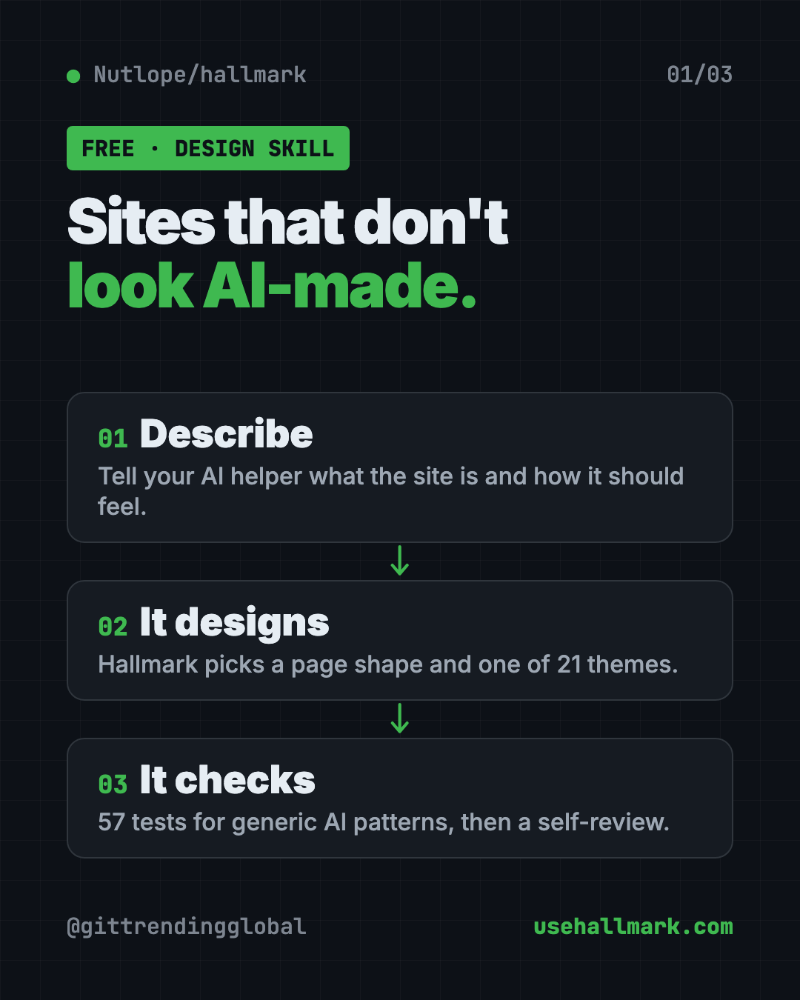
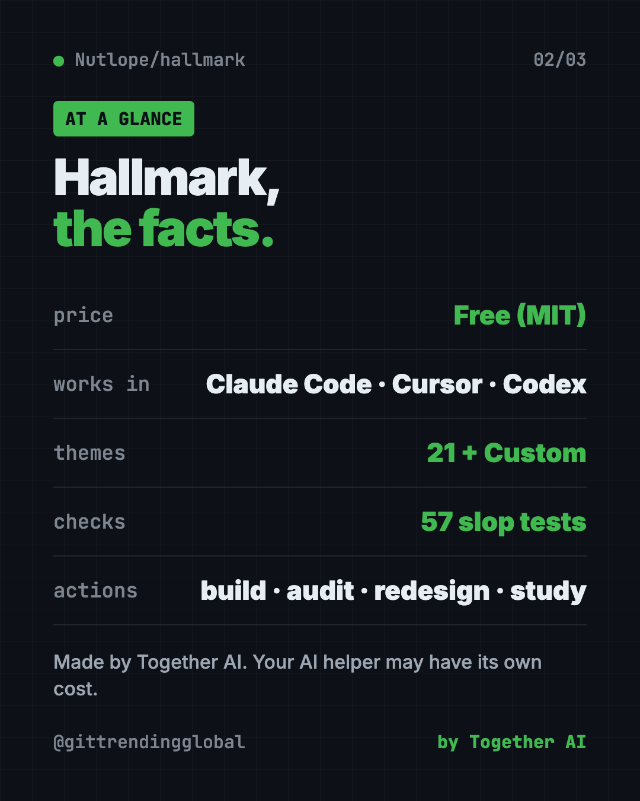
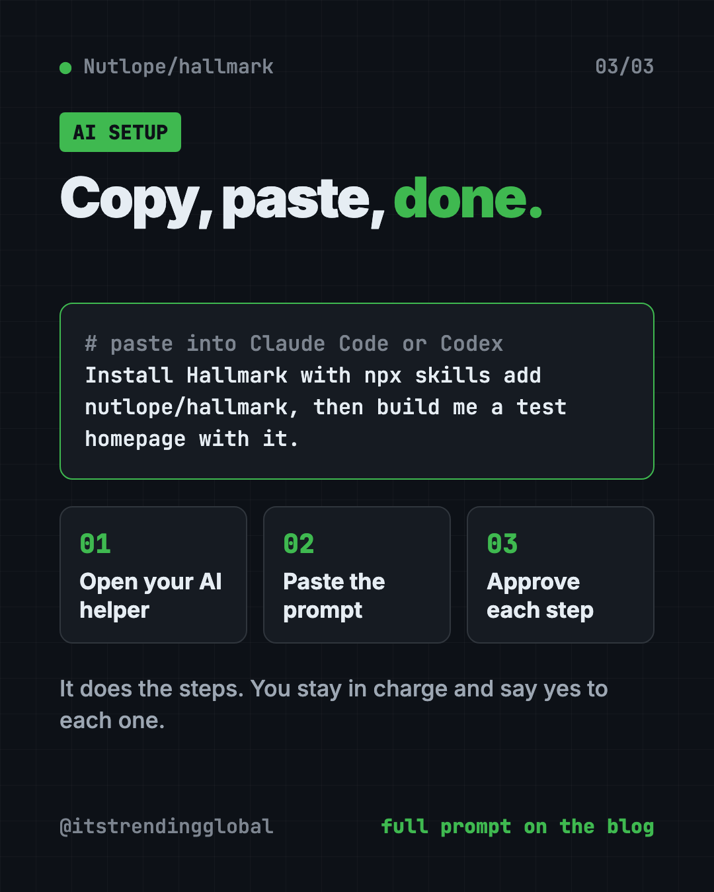

Hallmark: Free AI Web Design Skill for Claude Code (2026)
- Published 15 Oct 2026
- Updated 16 Oct 2026
- 7 min read
- License MIT
- By the ITG Now team
Hallmark is a free AI web design skill that makes Claude Code, Cursor and Codex build pages that don't look AI-made. You describe your site, and it picks a layout and theme that fit your idea instead of the usual template.
Ask an AI for a website and you often get the same thing. A big centered headline, a purple glow, three boxes in a row. People spot it fast, and it can make a good business look cheap. This guide shows what Hallmark does, how to use it, and how to install it in one line.
Key takeaways
- Free and open source. MIT license. In the README's words: "Use it, fork it, ship it."
- Made by Together AI. It works as a "skill" inside Claude Code, Cursor and Codex.
- 21 themes and 57 checks. It picks a look for your brief, then tests the page against 57 generic-AI patterns.
- Four actions. Build, audit, redesign, and study a design you like.
- One command to install.
npx skills add nutlope/hallmark.
What is Hallmark?
Hallmark is a design skill. A skill is a set of written rules an AI coding helper follows for one kind of job. This one's job is making web pages.
The README calls it a skill "that refuses to look AI-generated." Here is how it gets there, in plain words:
- It reads your brief. That's your short description of the site.
- It picks a page shape. The README calls this a macrostructure, the overall layout.
- It picks a theme. One of 21, matched to your idea.
- It checks its own work. 57 "slop-test" checks, plus a self-review before it hands the page back.
The goal: two sites for two different ideas should "feel like different sites, not colour-swaps of the same template."
When no theme fits your idea, Hallmark switches to a Custom mode. It designs from scratch with its own colors, fonts and layout. The same 57 checks still apply.

What can Hallmark do? The four actions
| Action | What it does |
|---|---|
| Build (default) | Makes new pages. Picks a layout, applies its rules, runs the checks. |
hallmark audit |
Scores your existing site against its bad-pattern list. You get a to-do list. No edits. |
hallmark redesign |
Keeps your words, page order and brand. Throws out the layout and rebuilds it. |
hallmark study |
Give it a screenshot or link. It pulls out the layout, font pairing and main color. |
The study action refuses pixel-perfect clones and paid templates. It can also write a small design.md notes file you can hand to other AI tools.
How to use Hallmark (real examples)
- A bakery homepage. "Build a homepage for a family bakery. Warm, handmade, a little old-fashioned." Hallmark picks a shape and theme to match.
- Check your current site. Run an audit on your landing page to see where it looks generic. You get a punch list, and nothing changes until you say so.
- Freshen an old page. Use redesign to keep your words and brand but get a new layout.
- Learn from a site you love. Point study at a design you admire. You get its "DNA" to build your own take.
- A launch page for an event. The README's examples include a print fair, a record label and a tea menu. Each one looks clearly different.
💡 Tip: Describe the feeling, not just the facts. "Calm and expensive" or "loud and playful" gives Hallmark much more to work with than "a homepage for my shop."
You can browse all the example pages on the live demo at usehallmark.com. Press T there to cycle through the themes.
Is Hallmark free?
Yes. Hallmark is free under the MIT license. You can use it in paid client work too.
The AI helper you use it with may cost money. Claude Code, Cursor and Codex usually need their own account or plan. Hallmark doesn't change that.
Hallmark at a glance
| Price | Free (your AI helper may have its own cost) |
| Works offline | No. It runs inside an AI helper that needs the internet |
| Works with | Claude Code, Cursor, Codex |
| License | MIT (open source) |
| Made by | Together AI |
| Themes | 21, plus a Custom mode |
| Best for | Anyone building websites with AI who wants them to look less generic |

How to install Hallmark
You need Node.js (a free program that runs many developer tools) and one of the supported AI helpers.
Open Terminal on a Mac, or a command window on Windows. Copy and paste this:
npx skills add nutlope/hallmark
That's it. Run the same command again any time to update.
Install it by hand instead
The README also lets you copy two things, SKILL.md and the references/ folder, into the right place:
- Claude Code:
~/.claude/skills/hallmark/ - Cursor:
.cursor/rules/hallmark.mdc(the body ofSKILL.md, without the top header block) - Codex:
~/.codex/skills/hallmark/for you, or.codex/skills/hallmark/for one project
Then open your AI helper and ask for a website.
⚠️ Heads up: Hallmark gives the AI rules and checks. It can't promise a great result. The quality still depends on the AI model and how clearly you describe what you want.
Let Claude or Codex set it up for you
Claude Code and OpenAI Codex are AI helpers that can run setup steps on your computer. You paste a request, it does the work, and you approve each step.
Copy and paste this:
Please install the Hallmark design skill from github.com/Nutlope/hallmark.
1. Check that Node.js is installed. If not, explain how to get it.
2. Run "npx skills add nutlope/hallmark" and tell me what it does first.
3. Confirm the skill is installed where my AI helper can find it.
4. Then build me a simple test homepage using Hallmark so I can see it work.
Then try asking:
Use Hallmark to build a homepage for my dog-walking business. Friendly, local, trustworthy.
Run a Hallmark audit on my landing page and explain the punch list in plain words.
Use Hallmark study on this site I like, then build my page with a similar feel: [paste link]

Who should use Hallmark?
- Small business owners who want a site that feels like their brand.
- Freelance designers who use AI for fast first drafts.
- Marketers building launch or campaign pages.
- Musicians, artists and makers who want a site with personality.
- Founders shipping a product page in a hurry.
If you already "vibe code" (build things by chatting with AI), this fits right into how you work.
Our take
Hallmark goes after a real problem. Most AI-built sites share the same look, and that sameness costs trust. If you want a free AI web design skill that pushes back on the defaults, this is a simple one to try.
What we like:
- One command to install, one to update.
- Four clear actions, including an audit that changes nothing.
- The study action respects other people's work. No clones.
- Real examples you can browse before you install.
What to watch for:
- You need a paid or account-based AI helper to use it.
- It shapes the AI's choices but can't fix a vague brief.
- It is for web pages, not logos, print or app icons.
💡 Tip: Want a visual editor too? Pair Hallmark with OpenPencil, a free design app that opens Figma files.
More free design helpers: Awesome DESIGN.md, a library of design rule files, Open Design and Diagram Design. Hallmark also showed up in our trending repos for the week of July 13, 2026.
FAQ
Is Hallmark free to use?
Yes. Hallmark is free and open source under the MIT license. The AI helper you run it in may have its own cost.
Does Hallmark work with Claude Code?
Yes. It works with Claude Code, Cursor and Codex. Install it with npx skills add nutlope/hallmark.
Can Hallmark copy a website I like?
No. The study action pulls out the layout, font pairing and main color, but the README says it refuses pixel clones and paid templates.
How many themes does Hallmark have?
The README lists 21 themes. When none fits, it switches to a Custom mode and designs from scratch.
Can Hallmark fix my existing website?
Yes, in two ways. hallmark audit gives you a list of problems without editing. hallmark redesign rebuilds the layout while keeping your words and brand.
Get Hallmark: github.com/Nutlope/hallmark
More free design tools
- PhotoCraft PhotoCraft is a free PSD editor that works like Photoshop. It opens and saves real layered PSD files and runs offline on Mac, Windows and Linux.
- OpenPencil OpenPencil is a free Figma alternative. It opens and saves .fig files, builds designs from a chat prompt, and lets you co-edit live with no account.
- Compositor Compositor is a free Photoshop alternative for Mac with layers, masks, blend modes and Photoshop-style shortcuts. It opens PSD files and has no subscription.
- On-Brand Diagrams with Claude Diagram Design makes on-brand diagrams with Claude and other AI helpers. Ask in plain words and get a clean diagram in one file you can open anywhere.
- Archify Archify is a free AI diagram generator. Describe an idea, plan or codebase to Claude Code or Codex and get an interactive diagram as one shareable web page.
- OpenDesign OpenDesign is a free open source AI design tool. It uses Claude Code, Codex or Cursor to make on-brand prototypes, slide decks, dashboards and images.
Latest AI news
- Meta gives away its big Muse Spark AI for free
- Chip startup Tenstorrent raises $1.5B at $6.2B value
- Ex-OpenAI engineer in spy case had Saudi backing: prosecutors
- Hacker used AI agents to break into 100+ company sites
Keep reading

VoiceStudio: Free ElevenLabs Alternative
VoiceStudio is a free ElevenLabs alternative. Clone a voice, dub videos and turn text into speech on your own Mac, Windows or Linux computer.

HyperFrames: Make AI Videos From HTML
HyperFrames is a free tool that makes AI video from HTML. Your AI agent writes a web page, and HyperFrames renders it into an MP4 video.

Folia: Free Animated Lyrics Music Player
Folia is a free animated lyrics music player that shows full-screen moving lyrics for your local music, Navidrome and more. What it does and how to start.